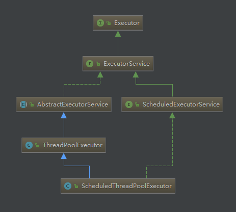
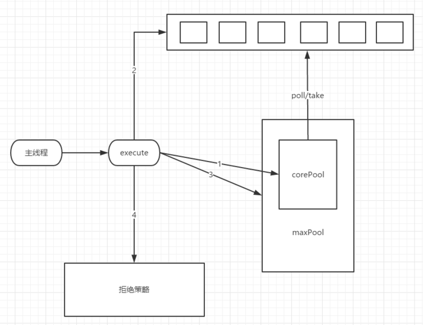
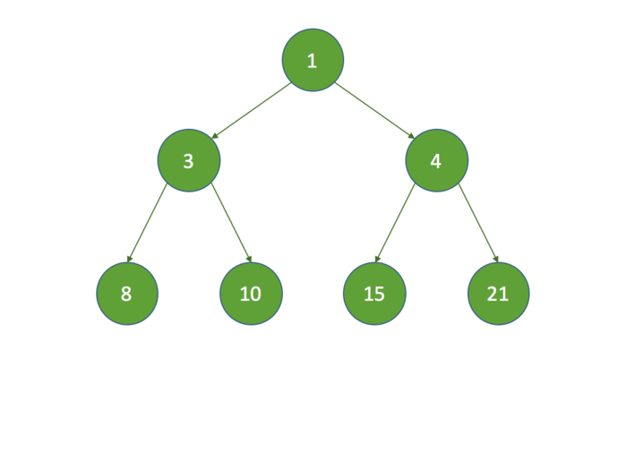

1 Executor2 ExecutorService3 AbstractExecutorService4 ThreadPoolExecutor4.1 工作原理4.2 线程池的创建4.3 提交任务4.4 执行任务4.5 销毁线程4.6 线程池的销毁4.6.1 shutdown4.6.2 shutdownNow4.7 拒绝策略5 ScheduledExecutorService6 ScheduledThreadPoolExecutor6.1 构造函数6.2 schedule6.3 decorateTask6.4 delayedExecute6.5 shutdown7 ScheduledThreadPoolExecutor7.1 属性字段7.2 任务入列7.3 任务出列8 Executors8.1 newCachedThreadPool 8.2 newFixedThreadPool 8.3 newScheduledThreadPool 8.4 newSingleThreadExecutor 8.5 newSingleThreadScheduledExecutor
Java1.5新增的并发包（java.lang.concurrent）中，包含了一套Executor框架，作为新的更加灵活的异步执行框架，其支持多种不同类型的任务执行策略，提供了一种标准的方法将任务的提交过程和执行过程解耦开发，基于生产者-消费者模式，其提交任务的线程相当于生产者，执行任务的线程相当于消费者，并用Runnable来表示任务，Executor的实现还提供了对生命周期的支持，以及统计信息收集，应用程序管理机制和性能监视等机制。
Executor的最终实现是线程池，主要来进行任务执行、提交、中断等操作。

后续章节将会对这些常用的接口和实现进行详细讲解。
在使用Executor框架时，还有一个很重要的角色，那就是Future，作为异步执行结果的封装，关于Future框架体系，将会在后面专门的章节中讲解。
Executor作为顶层接口，只定义了一个execute方法：
public interface Executor {void execute(Runnable command);}
官方源码中对execute方法的说明是：在未来的某个时间执行命令command，该命令可能在新线程中执行、也可能在线程池中执行或者在指定的线程中执行，这由Executor接口的实现来决定。
Executor框架的出现，是为了提供更加灵活和强大的异步执行框架，在Executor之前，只有Thread可以执行Runnable 任务，在Executor出现之后，在进行异步编程时，我们要第一时间能想到不仅Thread可以执行Runnable 任务，Executor也可以，并且更加强大和灵活，是我们的首选。
ExecutorService接口继承了Excutor接口，并且定义了一些生命周期方法，同时添加了对Callable的支持，并且定义了提交任务的概念，即submit方法；不同于Excutor接口的execute方法直接执行Runnable任务，submit方法意在提交任务，可以是Runnable任务，也可以是Callable任务，任务提交后不会马上执行，而是返回Future对象，程序员可以通过Future对象来控制任务何时执行。
源码
xpublic interface ExecutorService extends Executor {/*** 终止已提交的任务，不再接受新的任务。* 如果所有的任务都已经执行完毕，那么调用该方法不会有任何影响* 同时，该方法不会等待所有已经提交的任务执行完毕*/void shutdown();/*** 尝试终止所有执行中的任务, 取消等待中的任务，并且返回这些等待中的任务* 同时，该方法不会等待执行中的任务执行结束，而是直接尝试关闭。*/List<Runnable> shutdownNow();/*** 终止所有任务，但是会等待任务执行完毕，只等待指定的时长timeout*/boolean awaitTermination(long timeout, TimeUnit unit)throws InterruptedException;/*** 查看当前Executor是否已经关闭*/boolean isShutdown();/*** 查看所有任务是否在关闭前都已经执行完毕*/boolean isTerminated();/*** 提交Callable任务，返回Future对象，此时task任务并未开始执行* 调用Future.get()方法，任务执行成功后，返回执行结果T；如果任务执行失败，get()方法抛出异常*/<T> Future<T> submit(Callable<T> task);/*** 提交Runnable任务，返回Future对象，此时task任务并未开始执行* 调用Future.get()方法执行成功，任务执行成功后，将result作为执行结果返回；如果任务执行失败，get()方法抛出异常*/<T> Future<T> submit(Runnable task, T result);/*** 提交Runnable任务，返回Future对象，此时task任务并未开始执行* 调用Future.get()方法执行成功，任务执行成功后，返回null；如果任务执行失败，get()方法抛出异常*/Future<?> submit(Runnable task);/*** 执行多个Callable任务，每个Callable任务对应一个Future，注意，在该方法的实现中，* 会调用Future.get()来执行任务，所以返回后的Future内有完整的任务状态和结果。*/<T> List<Future<T>> invokeAll(Collection<? extends Callable<T>> tasks)throws InterruptedException;/*** 执行多个Callable任务，如果在指定等待时间timeout内没有执行完毕的任务将被取消，* 每个Callable任务对应一个Future，注意，在该方法的实现中，* 会调用Future.get()来执行任务，所以返回后的Future内有完整的任务状态和结果。*/<T> List<Future<T>> invokeAll(Collection<? extends Callable<T>> tasks,long timeout, TimeUnit unit)throws InterruptedException;/*** 执行一组任务，如果有任何一个任务执行成功，那么直接返回其执行结果*/<T> T invokeAny(Collection<? extends Callable<T>> tasks)throws InterruptedException, ExecutionException;/*** 执行一组任务，如果有任何一个任务在指定超时时间内执行成功，那么直接返回其执行结果*/<T> T invokeAny(Collection<? extends Callable<T>> tasks,long timeout, TimeUnit unit)throws InterruptedException, ExecutionException, TimeoutException;}
AbstractExecutorService实现了ExecutorService接口定义的大部分方法，但是没有提供实现生命周期相关方法的实现。
源码
xxxxxxxxxxpublic abstract class AbstractExecutorService implements ExecutorService {/*** 将Runnable任务和value包装成Future对象返回，value作为默认值*/protected <T> RunnableFuture<T> newTaskFor(Runnable runnable, T value) {return new FutureTask<T>(runnable, value);}/*** 将Callable任务包装成Future对象返回*/protected <T> RunnableFuture<T> newTaskFor(Callable<T> callable) {return new FutureTask<T>(callable);}/*** submit方法通过newTaskFor来将任务包装成Future，注意submit方法内调用了execute()方法，* 一开始可能误认为直接执行了任务，但是查看ThreadPoolExecutor等实现可以发现，execute()的实现中，* 并没有直接执行任务，而只是将任务放入到任务列表中，等待线程执行。*/public Future<?> submit(Runnable task) {if (task == null) throw new NullPointerException();RunnableFuture<Void> ftask = newTaskFor(task, null);execute(ftask);return ftask;}public <T> Future<T> submit(Runnable task, T result) {if (task == null) throw new NullPointerException();RunnableFuture<T> ftask = newTaskFor(task, result);execute(ftask);return ftask;}public <T> Future<T> submit(Callable<T> task) {if (task == null) throw new NullPointerException();RunnableFuture<T> ftask = newTaskFor(task);execute(ftask);return ftask;}/*** the main mechanics of invokeAny.*/private <T> T doInvokeAny(Collection<? extends Callable<T>> tasks,boolean timed, long nanos)throws InterruptedException, ExecutionException, TimeoutException {if (tasks == null)throw new NullPointerException();int ntasks = tasks.size();if (ntasks == 0)throw new IllegalArgumentException();ArrayList<Future<T>> futures = new ArrayList<Future<T>>(ntasks);ExecutorCompletionService<T> ecs =new ExecutorCompletionService<T>(this);// For efficiency, especially in executors with limited// parallelism, check to see if previously submitted tasks are// done before submitting more of them. This interleaving// plus the exception mechanics account for messiness of main// loop.try {// Record exceptions so that if we fail to obtain any// result, we can throw the last exception we got.ExecutionException ee = null;final long deadline = timed ? System.nanoTime() + nanos : 0L;Iterator<? extends Callable<T>> it = tasks.iterator();// Start one task for sure; the rest incrementallyfutures.add(ecs.submit(it.next()));--ntasks;int active = 1;for (;;) {Future<T> f = ecs.poll();if (f == null) {if (ntasks > 0) {--ntasks;futures.add(ecs.submit(it.next()));++active;}else if (active == 0)break;else if (timed) {f = ecs.poll(nanos, TimeUnit.NANOSECONDS);if (f == null)throw new TimeoutException();nanos = deadline - System.nanoTime();}elsef = ecs.take();}if (f != null) {--active;try {return f.get();} catch (ExecutionException eex) {ee = eex;} catch (RuntimeException rex) {ee = new ExecutionException(rex);}}}if (ee == null)ee = new ExecutionException();throw ee;} finally {for (int i = 0, size = futures.size(); i < size; i++)futures.get(i).cancel(true);}}public <T> T invokeAny(Collection<? extends Callable<T>> tasks)throws InterruptedException, ExecutionException {try {return doInvokeAny(tasks, false, 0);} catch (TimeoutException cannotHappen) {assert false;return null;}}public <T> T invokeAny(Collection<? extends Callable<T>> tasks,long timeout, TimeUnit unit)throws InterruptedException, ExecutionException, TimeoutException {return doInvokeAny(tasks, true, unit.toNanos(timeout));}public <T> List<Future<T>> invokeAll(Collection<? extends Callable<T>> tasks)throws InterruptedException {if (tasks == null)throw new NullPointerException();ArrayList<Future<T>> futures = new ArrayList<Future<T>>(tasks.size());boolean done = false;try {for (Callable<T> t : tasks) {RunnableFuture<T> f = newTaskFor(t);futures.add(f);execute(f);}for (int i = 0, size = futures.size(); i < size; i++) {Future<T> f = futures.get(i);if (!f.isDone()) {try {f.get();//可以看到此处并没有对任务执行失败进行处理，无论任务执行成功与否，只要完成即可} catch (CancellationException ignore) {} catch (ExecutionException ignore) {}}}//所有任务执行完毕，不管是否成功done = true;return futures;} finally {if (!done)for (int i = 0, size = futures.size(); i < size; i++)futures.get(i).cancel(true);}}public <T> List<Future<T>> invokeAll(Collection<? extends Callable<T>> tasks,long timeout, TimeUnit unit)throws InterruptedException {if (tasks == null)throw new NullPointerException();long nanos = unit.toNanos(timeout);ArrayList<Future<T>> futures = new ArrayList<Future<T>>(tasks.size());boolean done = false;try {for (Callable<T> t : tasks)futures.add(newTaskFor(t));final long deadline = System.nanoTime() + nanos;final int size = futures.size();// Interleave time checks and calls to execute in case// executor doesn't have any/much parallelism.for (int i = 0; i < size; i++) {execute((Runnable)futures.get(i));nanos = deadline - System.nanoTime();if (nanos <= 0L)return futures;}for (int i = 0; i < size; i++) {Future<T> f = futures.get(i);if (!f.isDone()) {if (nanos <= 0L)return futures;try {f.get(nanos, TimeUnit.NANOSECONDS);} catch (CancellationException ignore) {} catch (ExecutionException ignore) {} catch (TimeoutException toe) {return futures;}nanos = deadline - System.nanoTime();}}done = true;return futures;} finally {if (!done)for (int i = 0, size = futures.size(); i < size; i++)futures.get(i).cancel(true);}}}
ThreadPoolExecutor是Executor框架的线程池实现，所有通过ExecutorService来提交执行任务的操作，都是由ThreadPoolExecutor完成的。
ThreadPoolExecutor的工作原理可能并不难理解，但是在阅读源码时，由于各种状态的定义和切换，使得透彻理解并不容易，下面将一步一步的通过源码来深入理解ThreadPoolExecutor。
首先，我们通过一个简单的图示来了解下ThreadPoolExecutor基础的工作原理：

第1步：调用ThreadPoolExecutor的execute提交线程，首先检查CorePool，如果CorePool内的线程小于CorePoolSize，新创建线程执行任务。 第2步：如果当前CorePool内的线程大于等于CorePoolSize，那么将线程加入到BlockingQueue。 第3步：如果不能加入BlockingQueue，在小于MaxPoolSize的情况下创建线程执行任务。 第4步：如果线程数大于等于MaxPoolSize，那么执行拒绝策略。
首先，线程池中定义了5种不同的生命周期内的状态：
xxxxxxxxxx/** 线程池整个生命周期中的各种状态:** RUNNING: 可以接受新任务，并执行队列中的任务* SHUTDOWN: 不再接受新任务，但是会继续执行已经在队列中的任务* STOP: 不再接受新任务，不再执行队列中的任务，中断正在执行的任务* TIDYING: 所有任务都执行完成，worker数量为0（即线程数为0），转换到此状态时* 将触发terminated()这个钩子函数* TERMINATED: terminated()钩子函数执行完毕** 状态的转换存在以下几种情况：** RUNNING -> SHUTDOWN* 执行shutdown()方法* (RUNNING or SHUTDOWN) -> STOP* 执行shutdownNow()* SHUTDOWN -> TIDYING* 任务队列和线程池都为空时* STOP -> TIDYING* 线程池为空时* TIDYING -> TERMINATED* terminated()钩子函数执行完毕时*/private static final int RUNNING = -1 << COUNT_BITS;private static final int SHUTDOWN = 0 << COUNT_BITS;private static final int STOP = 1 << COUNT_BITS;private static final int TIDYING = 2 << COUNT_BITS;private static final int TERMINATED = 3 << COUNT_BITS;
我们来看下ThreadPoolExecutor的构造方法：
xxxxxxxxxx/*** 通过给定的条件创建线程池** @param corePoolSize 池中的核心线程数，包括空闲线程* @param maximumPoolSize 池中允许的最大线程数* @param keepAliveTime 当线程数超过了核心线程数时，多余的空闲线程的存活时间，超过该存活时间，线程将被销毁* @param unit keepAliveTime的时间单位，如时、分、秒等* @param workQueue 任务队列，该队列只保存execute方法提交的Runnable任务* @param threadFactory 用于创建新线程的线程工厂* @param handler 当线程数达到最大或者任务队列已满时采取的策略*/public ThreadPoolExecutor(int corePoolSize,int maximumPoolSize,long keepAliveTime,TimeUnit unit,BlockingQueue<Runnable> workQueue,ThreadFactory threadFactory,RejectedExecutionHandler handler) {if (corePoolSize < 0 ||maximumPoolSize <= 0 ||maximumPoolSize < corePoolSize ||keepAliveTime < 0)throw new IllegalArgumentException();if (workQueue == null || threadFactory == null || handler == null)throw new NullPointerException();this.acc = System.getSecurityManager() == null ?null :AccessController.getContext();this.corePoolSize = corePoolSize;this.maximumPoolSize = maximumPoolSize;this.workQueue = workQueue;this.keepAliveTime = unit.toNanos(keepAliveTime);this.threadFactory = threadFactory;this.handler = handler;}
在此处，我们要注意corePoolSize 和maximumPoolSize 这两个参数，在ThreadPoolExecutor中，维护了两个关于线程数量的字段，即corePoolSize 和maximumPoolSize，前者表示线程池中的核心线程数，也就是正常状态下线程池中保持存活的线程数；而maximumPoolSize表示线程池中最大的线程数，当提交任务时，线程池中线程数达到了corePoolSize 并且任务队列已满无法继续放入任务，那么将创建新的线程来执行任务，超出corePoolSize 的线程空闲超过指定的存活时间后将被销毁。
在实际开发中，除非有特别的需要，一般通过Executors工具类来创建不同类型的ThreadPoolExecutor线程池，如：Executors.newSingleThreadExecutor()创建单线程线程池、Executors.newFixedThreadPool()创建固定大小的线程池、Executors.newCachedThreadPool()创建无界限的线程池。
在后面的章节会对Executors工具类做更加详细的讲解。此处我们只需要记住：除非有特殊的功能需求，否则建议通过Executors工具类来创建线程池。
初始化完毕的ThreadPoolExecutor中的线程数实际为0，线程的创建是根据任务的提交时池中状态来完成的。
任务的提交可以通过submit和execute方法，先查看下execute方法实现：
xxxxxxxxxxpublic void execute(Runnable command) {if (command == null)throw new NullPointerException();//主要分3种情况// ctl字段记录了当前处于running状态的线程数目int c = ctl.get();/** 情况1：如果当前线程数小于corePoolSize，那么创建新线程并将当前任务作为新线程的第一个任务。* addWorker方法将再次检查线程数量和运行状态来避免创造非法的线程*/if (workerCountOf(c) < corePoolSize) {if (addWorker(command, true))return;c = ctl.get();}/** 情况2：如果任务能够被成功添加到队列中，仍然进行线程状态的检查，如果任务入列后* 线程状态发生了变化，那么回滚任务队列（删除入列的任务），然后执行reject方法根据* 拒绝策略来处理任务*/if (isRunning(c) && workQueue.offer(command)) {int recheck = ctl.get();if (! isRunning(recheck) && remove(command))reject(command);else if (workerCountOf(recheck) == 0)addWorker(null, false);}/** 情况3：如果任务不能入列，并且无法创建新的线程来执行任务，那么执行reject方法根据* 拒绝策略来处理任务*/else if (!addWorker(command, false))reject(command);}
在execute方法实现中，并没有显示的创建线程，而是通过addWorker方法来实现的，下面就讲解一下ThreadPoolExecutor中很重要的一个概念：Worker
先来看下Worker类的定义：
xxxxxxxxxx/*** Worker继承了AbstractQueuedSynchronizer，从而在执行任务时可以简单的获取和释放锁* 这可以防止在唤醒等待状态的worker时错误地中断运行状态的worker。** 我们实现了一个不可重入的互斥锁，而并没有使用ReentrantLock这样的可重入的互斥锁，* 因为这可以阻止worker在运行时通过setCorePoolSize等方法来修改线程池属性。** 另外，为了防止线程在非running状态下被中断，我们通过一个负值初始化一个锁，* 在任务执行时会清除它。*/private final class Workerextends AbstractQueuedSynchronizerimplements Runnable{/** Worker是不可序列化的，提供serialVersionUID只是为了抑制javac警告 */private static final long serialVersionUID = 6138294804551838833L;/** Worker绑定的线程. */final Thread thread;/** Worker的第一个要执行的任务. */Runnable firstTask;/** Worker已经执行完成的任务数目 */volatile long completedTasks;/*** 初始化Worker，firstTask作为第一个任务*/Worker(Runnable firstTask) {// 初始化一个值为-1的锁，防止线程在非运行状态下被中断setState(-1); // inhibit interrupts until runWorkerthis.firstTask = firstTask;this.thread = getThreadFactory().newThread(this);}/** 执行任务 */public void run() {runWorker(this);}/*** 查看worker是否被当前线程独占* 0 代表非锁定状态* 1 代表锁定状态*/protected boolean isHeldExclusively() {return getState() != 0;}/*** 获取同步状态，即尝试让当前线程独占worker*/protected boolean tryAcquire(int unused) {if (compareAndSetState(0, 1)) {setExclusiveOwnerThread(Thread.currentThread());return true;}return false;}/*** 解除同步状态，解除当前线程对worker的独占*/protected boolean tryRelease(int unused) {setExclusiveOwnerThread(null);setState(0);return true;}public void lock() { acquire(1); }public boolean tryLock() { return tryAcquire(1); }public void unlock() { release(1); }public boolean isLocked() { return isHeldExclusively(); }/*** 如果worker已经开始运行，中断当前线程*/void interruptIfStarted() {Thread t;// 如果worker状态值大于0（说明已经被其他线程独占）并且新线程处于非中断状态// 那么，中断新创建的线程if (getState() >= 0 && (t = thread) != null && !t.isInterrupted()) {try {t.interrupt();} catch (SecurityException ignore) {}}}}
Worker继承了AbstractQueuedSynchronizer，AbstractQueuedSynchronizer通过单一的int值来维护同步状态，这也就使得Worker可以很容易地与一个线程绑定。
Worker的创建是通过addWorker方法，来看下addWorker的实现：
xxxxxxxxxx/*** 检查当前的线程池状态和界限是否允许添加一个新的worker，如果允许，那么更新worker数量，* 并且在新创建的worker中执行firstTask任务。* 如果线程池已经关闭或者正在被正常关闭，那么返回false。 如果线程工厂创建新线程失败，也返回false** @param firstTask 新建线程要执行的任务* @param core true表示使用corePoolSize作为边界值，false表示使用maximumPoolSize作为边界值* @return 添加成功返回true；* 如果线程池已经关闭或者正在被正常关闭，那么返回false。 如果线程工厂创建新线程失败，也返回false*/private boolean addWorker(Runnable firstTask, boolean core) {retry:for (;;) {int c = ctl.get();int rs = runStateOf(c);/* rs >= SHUTDOWN说明状态是SHUTDOWN、STOP、TIDYING或TERMINATED */if (rs >= SHUTDOWN &&/*** 此条件表示状态正好是SHUTDOWN，并且firstTask为空（表示没有接受新任务），* 并且workQueue任务队列不为空，那么此时允许添加新的worker来执行队列中剩下的任务*/! (rs == SHUTDOWN &&firstTask == null &&! workQueue.isEmpty()))/*** 如果状态是SHUTDOWN，但是不满足上述条件，说明没有任务需要执行，那么不允许创建新的worker，* 当然，如果状态是STOP、TIDYING或TERMINATED中的任何一个，也都是没有必要创建worker的*/return false;/* 当程序执行到这里，说明线程池状态为RUNNING */for (;;) {int wc = workerCountOf(c);//检查线程数是否超出界限，如果超出，拒绝任务，不创建新的workerif (wc >= CAPACITY ||wc >= (core ? corePoolSize : maximumPoolSize))return false;//没有超出界限，那么增加worker数目，更新成功，跳出循环if (compareAndIncrementWorkerCount(c))break retry;/** 如果更新失败，说明期间有其他新的worker加入，那么重新获取状态，重新循环判断* 是否允许创建新的worker*/c = ctl.get(); // Re-read ctlif (runStateOf(c) != rs)continue retry;// else CAS failed due to workerCount change; retry inner loop}}boolean workerStarted = false;boolean workerAdded = false;Worker w = null;try {w = new Worker(firstTask);final Thread t = w.thread;if (t != null) {final ReentrantLock mainLock = this.mainLock;mainLock.lock();try {//再次线程池检查状态int rs = runStateOf(ctl.get());if (rs < SHUTDOWN ||(rs == SHUTDOWN && firstTask == null)) {if (t.isAlive()) // precheck that t is startablethrow new IllegalThreadStateException();//如果线程池处于正常状态，那么添加新的worker到集合中workers.add(w);int s = workers.size();if (s > largestPoolSize)largestPoolSize = s;workerAdded = true;}} finally {mainLock.unlock();}if (workerAdded) {//添加成功后，启动新建的线程执行任务t.start();workerStarted = true;}}} finally {if (! workerStarted)addWorkerFailed(w);}return workerStarted;}
在addWorker方法中，注意在向workers集合中添加新创建的worker时的操作是加锁同步的，持有的锁是mainLock这个字段表示的锁，这个锁很重要，看一下jdk中对这个锁的说明：
xxxxxxxxxx/*** 拥有workers集合权限的锁* workers集合如果使用一种并发集合实现，性能会更好，但是之所以选择了使用锁* 来实现是因为：使用锁同步避免了不必要的中断风暴，特别是在shutdown阶段，不用* 锁来同步的话可能引起在线程退出时会中断那些不应该被中断的线程。* 在shutdown和shutdownNow方法中，同样要持有这个锁，这是为了在单独检查中断权限* 时workers集合是不变的。*/private final ReentrantLock mainLock = new ReentrantLock();
在addWorker方法中，注意在worker成功添加后，调用了t.start()来启动worker绑定的线程，这不仅意味着启动线程，也意味着开始执行任务，这是为什么呢？ 通过Worker类的定义，发现Worker实现了Runnable接口，也就是说Worker本身就是一个Runnable，线程可以直接运行它，而Worker中run方法的实现是这样的：
xxxxxxxxxx/** 执行任务 */public void run() {runWorker(this);}
Worker中run方法的实现是将自身作为参数，调用runWorker方法，来看下runWorker方法的实现：
xxxxxxxxxx/*** worker工作循环，不断地从队列中获取任务并且执行** 1. 一开始可能直接运行一个初始化好的任务而不需要从任务队列中获取任务。* 否则，在没有提供初始化的任务时，只要线程池处于running状态，那么就会不断地* 调用getTask方法来获取任务并执行，如果getTask方法返回null，则退出该方法；或者* 由于异常而退出** 2. 在开始执行任务之前，先获取锁来防止任务执行时被中断。* 可以保证除非线程池停止，否则线程不会被中断。** 3. 每个任务执行前都会先调用beforeExecute方法，beforeExecute可能抛出异常，如果抛出异常，* 那么标记completedAbruptly为true退出循环，销毁线程，不再执行任务** 4. 当beforeExecute正常执行完毕，开始执行任务，执行过程中发生的任何异常都会传递到afterExecute方法中，* 这是因为run方法无法抛出异常，所以该方法也不允许抛出异常。 所有异常通过afterExecute包装后传递给线程的* 异常处理器UncaughtExceptionHandler。 任何抛出异常都会导致线程的销毁。** 5. 在任务执行完毕后，调用afterExecute处理异常，afterExecute方法也可能抛出异常，* afterExecute抛出异常也会导致线程销毁** Thread线程的UncaughtExceptionHandler可以捕获到所有发生的异常**/final void runWorker(Worker w) {Thread wt = Thread.currentThread();Runnable task = w.firstTask;w.firstTask = null;//解锁worker，解锁后worker可以被中断w.unlock();//completedAbruptly表示任务是否由于异常而结束boolean completedAbruptly = true;try {//执行初始化任务或者通过getTask方法从任务队列中获取任务//在获取不到任务时退出循环while (task != null || (task = getTask()) != null) {//成功获取到任务，worker准备开始工作，工作前，上锁，确保工作期间线程不会被中断w.lock();if ((runStateAtLeast(ctl.get(), STOP) ||(Thread.interrupted() &&runStateAtLeast(ctl.get(), STOP))) &&!wt.isInterrupted())/*** 如果线程池已经停止，那么线程一定要中断；如果线程池运行正常，那么尝试中断当前线程，* 正常情况下，运行中的worker的线程是不会被中断的，如果中断成功，说明线程池状态发生了变化，说明* 线程被interrupttedIfStarted()方法强制中断并且还未中断完成，那么最后一定要确认线程被中断*/wt.interrupt();try {//任务执行前检查，该类中并未提供实现beforeExecute(wt, task);Throwable thrown = null;try {//执行任务task.run();} catch (RuntimeException x) {thrown = x; throw x;} catch (Error x) {thrown = x; throw x;} catch (Throwable x) {thrown = x; throw new Error(x);} finally {//任务执行结束后进行异常处理，该类中并未提供实现afterExecute(task, thrown);}} finally {task = null;w.completedTasks++;w.unlock();}}//所有任务执行完毕，标记worker状态为“不是因异常中断而结束”completedAbruptly = false;} finally {//处理worker执行完毕后退出行为processWorkerExit(w, completedAbruptly);}}
getTask()：从任务队列中获取任务
xxxxxxxxxx/*** 从任务队列中获取任务，在任务队列为空时，是阻塞还是等待指定时间取决于* 线程池的配置。当一个worker调用该方法时，说明此worker当前是空闲的，正尝试* 获取新任务并执行* 出现下面任何一种情况时，都会直接返回null：* 1. 线程池中worker数量大于线程池允许的最大线程数* 2. 线程池已经关闭* 3. 线程池正在关闭并且任务队列为空* 4. worker等待时长过期*/private Runnable getTask() {boolean timedOut = false; // Did the last poll() time out?for (;;) {int c = ctl.get();int rs = runStateOf(c);// 如果线程池已经关闭，或者正在关闭，任务队列为空，直接返回nullif (rs >= SHUTDOWN && (rs >= STOP || workQueue.isEmpty())) {decrementWorkerCount();return null;}int wc = workerCountOf(c);// 空闲线程是否永久存活或者worker数量是否超出核心线程数boolean timed = allowCoreThreadTimeOut || wc > corePoolSize;/* 此处if条件表示以下几种情况：* 1.线程池中worker数量超过线程池允许的最大线程数，返回null* 2.当前线程等待超时并且线程池中还有其他线程，那么返回null* 3.当前线程等待超时并且任务队列为空，那么返回nullif ((wc > maximumPoolSize || (timed && timedOut))&& (wc > 1 || workQueue.isEmpty())) {if (compareAndDecrementWorkerCount(c))return null;continue;}try {/*** 此处语句表示了4种情况：* 1.当前线程存在存活时间，那么通过pool获取任务，在存活时间内获取不到的话，返回null* 2.线程池中线程数超过了核心线程数，说明此线程不是核心线程，那么必定存在指定的存活时间，* 那么通过poll获取任务，在存活时间内获取不到，返回null* 3.当前线程是永久存活的，那么通过take阻塞式获取任务，获取不到时将等待，直到成功获取到任务* 4.当前线程是核心线程，核心线程一定是永久存活的，那么通过take阻塞式地获取任务*/Runnable r = timed ?workQueue.poll(keepAliveTime, TimeUnit.NANOSECONDS) :workQueue.take();if (r != null)return r;timedOut = true;} catch (InterruptedException retry) {timedOut = false;}}}
最后，看一下对worker执行完毕后退出的处理方法processWorkerExit：
xxxxxxxxxx/*** 该方法定义了worker执行完毕后的动作，简单总结起来就是：** 1. 将执行完毕的worker从worker集合中移除* 2. 当线程池处于正常运行状态，判断worker执行完成的原因，如果是正常执行完毕，* 那么新建worker补充到worker集合中；如果worker因异常中断，那么判断线程池中worker数目* 是否满足正常执行任务的需要，如果不满足，创建新的worker补充到worker集合中**/private void processWorkerExit(Worker w, boolean completedAbruptly) {//如果worker是正常执行完毕，不是因为中断而结束，那么更新线程池中worker数量if (completedAbruptly)decrementWorkerCount();final ReentrantLock mainLock = this.mainLock;//只要是workers集合相关的操作，都要获取这个锁mainLock.lock();try {//更新线程池的完成任务的数目completedTaskCount += w.completedTasks;//将当前已完成的worker从集合中移除workers.remove(w);} finally {mainLock.unlock();}tryTerminate();int c = ctl.get();//判断线程池状态，如果处于正常状态if (runStateLessThan(c, STOP)) {//当worker由于中断而退出时if (!completedAbruptly) {/*** 通过allowCoreThreadTimeOut（false表示当线程空闲时依旧保持存活状态；* true则表示当线程空闲时，使用初始化时指定的时长作为存活时间）来确定线程* 池需要的最小线程数*/int min = allowCoreThreadTimeOut ? 0 : corePoolSize;//如果任务队列不为空，那么最少需要一个线程来执行队列中的任务if (min == 0 && ! workQueue.isEmpty())min = 1;//当线程池中线程数量满足条件，那么直接退出，否则创建新的worker来准备执行任务if (workerCountOf(c) >= min)return;}//补充新的worker到线程池addWorker(null, false);}}
xxxxxxxxxx/*** 依次关闭已经提交的任务，不再接受新的任务。* 线程池已经关闭，再次调用该方法不会有任何影响** 该方法在关闭已提交的任务时，不会等待任务执行完毕。*/public void shutdown() {final ReentrantLock mainLock = this.mainLock;mainLock.lock();try {checkShutdownAccess();//更新线程池状态advanceRunState(SHUTDOWN);//先中断所有处于空闲状态，等待执行任务的线程interruptIdleWorkers();//为执行定时任务准备的钩子函数，主要用于ScheduledThreadPoolExecutoronShutdown();} finally {mainLock.unlock();}tryTerminate();}
在interruptIdleWorkers()方法中，是怎样识别并关闭空闲线程的呢？
xxxxxxxxxxprivate void interruptIdleWorkers() {interruptIdleWorkers(false);}private void interruptIdleWorkers(boolean onlyOne) {final ReentrantLock mainLock = this.mainLock;mainLock.lock();try {//遍历workers中的所有workerfor (Worker w : workers) {Thread t = w.thread;/*** 此处实现了对空闲线程的检测：* 如果worker中线程未被中断，并且尝试worker加锁成功，那么说明当前* worker是空闲的。这是为什么呢？worker在运行时，是会与线程锁定的，* 任务执行完毕后解锁，如果尝试锁定成功，说明worker未出于运行状态，* 即当前出于空闲状态*/if (!t.isInterrupted() && w.tryLock()) {try {t.interrupt();} catch (SecurityException ignore) {} finally {w.unlock();}}//是否只需要中断一个线程if (onlyOne)break;}} finally {mainLock.unlock();}}
xxxxxxxxxx/*** 中断所有的存活的线程，并返回任务队列中正在等待的未被执行的任务列表*/public List<Runnable> shutdownNow() {List<Runnable> tasks;final ReentrantLock mainLock = this.mainLock;mainLock.lock();try {checkShutdownAccess();//更新线程池状态advanceRunState(STOP);//中断所有worker，如果worker正在执行，那么也会调用interruptIfStarted来强制中断interruptWorkers();//导出任务队列中未执行的任务tasks = drainQueue();} finally {mainLock.unlock();}tryTerminate();//返回任务队列中未执行的任务列表return tasks;}
与shutdown()方法不同，shutdownNow()中调用interruptWorkers()方法来强制中断所有的worker：
xxxxxxxxxxprivate void interruptWorkers() {final ReentrantLock mainLock = this.mainLock;mainLock.lock();try {for (Worker w : workers)//强制中断（这个方法是Worker专门为强制中断准备的）w.interruptIfStarted();} finally {mainLock.unlock();}}
在ThreadPoolExecutor线程池中还有一个重要的接口：RejectedExecutionHandler。当提交给线程池的某一个新任务无法直接被线程池中“核心线程”直接处理，又无法加入等待队列，也无法创建新的线程执行；又或者线程池已经调用shutdown()方法停止了工作；又或者线程池不是处于正常的工作状态；这时候ThreadPoolExecutor线程池会拒绝处理这个任务，触发创建ThreadPoolExecutor线程池时定义的RejectedExecutionHandler接口的实现。
ThreadPoolExecutor线程池中定义了RejectedExecutionHandler接口的4种实现：
CallerRunsPolicy
任务被拒绝后，直接调用任务的run方法，但是并不是在线程池的线程中调用，而是直接调用。
AbortPolicy
任务被拒绝后，直接抛出RejectedExecutionException异常，这也是ThreadPoolExecutor线程池的默认拒绝策略。
DiscardPolicy
任务被拒绝后，直接丢弃该任务，既不抛出异常，也不做其他任何处理，可以说直接忽略该任务。
DiscardOldestPolicy
任务被拒绝后，线程池将强制取出任务队列中的第一个任务，并且重新尝试提交这个被拒绝的任务。
ScheduledExecutorService是Executor框架提供的用于执行定时任务的接口，用于任务调度。
ScheduledExecutorService继承了ExecutorService接口，所以ScheduledExecutorService的实现也必定是基于线程池实现的。
源码
xxxxxxxxxxpublic interface ScheduledExecutorService extends ExecutorService {/*** 在等待指定的时间(delay)后执行Runnable任务，只执行一次** @param command 要执行的任务* @param delay 延时* @param unit 时间单位* @return 返回一个未完成的ScheduledFuture，当future完成后，get()方法返回null*/public ScheduledFuture<?> schedule(Runnable command,long delay, TimeUnit unit);/*** 在等待指定的时间(delay)后执行Callable任务，只执行一次** @param callable 要执行的任务* @param delay 延时* @param unit 时间单位* @param <V> 任务返回值* @return 返回一个未完成的ScheduledFuture，当future完成后，get()方法返回特定类型的值*/public <V> ScheduledFuture<V> schedule(Callable<V> callable,long delay, TimeUnit unit);/*** 在等待指定时间(initialDelay)后，开始执行Runnable任务，并且每隔一定的时间(period)重复执行** @param command 要执行的任务* @param initialDelay 初始延时* @param period 任务执行周期* @param unit 时间单位* @return 返回一个未完成的ScheduledFuture，当future完成后，get()方法返回null*/public ScheduledFuture<?> scheduleAtFixedRate(Runnable command,long initialDelay,long period,TimeUnit unit);/*** 在等待指定时间(initialDelay)后，开始执行Runnable任务，任务执行完毕后，在* 等待指定的时间(delay)后再次执行，如此循环** @param command 要执行的任务* @param initialDelay 初始延时* @param delay 任务执行完成后到下一任务开始执行之间的延时* @param unit 时间单位* @return 返回一个未完成的ScheduledFuture，当future完成后，get()方法返回null*/public ScheduledFuture<?> scheduleWithFixedDelay(Runnable command,long initialDelay,long delay,TimeUnit unit);}
ScheduledThreadPoolExecutor作为ScheduledExecutorService接口的实现，同时继承了ThreadPoolExecutor，这也说明ScheduledThreadPoolExecutor是基于线程池实现的。
在ScheduledThreadPoolExecutor中，对ThreadPoolExecutor中的execute和submit等任务提交方法进行了重写，内部通过schedule系列方法实现。
在下面的源码部分，不会放上ScheduledThreadPoolExecutor的所有内容，而是重点讲解schedule系列方法是如何实现的。
xxxxxxxxxxpublic ScheduledThreadPoolExecutor(int corePoolSize) {super(corePoolSize, Integer.MAX_VALUE, 0, NANOSECONDS,new DelayedWorkQueue());}public ScheduledThreadPoolExecutor(int corePoolSize,ThreadFactory threadFactory) {super(corePoolSize, Integer.MAX_VALUE, 0, NANOSECONDS,new DelayedWorkQueue(), threadFactory);}public ScheduledThreadPoolExecutor(int corePoolSize,RejectedExecutionHandler handler) {super(corePoolSize, Integer.MAX_VALUE, 0, NANOSECONDS,new DelayedWorkQueue(), handler);}public ScheduledThreadPoolExecutor(int corePoolSize,ThreadFactory threadFactory,RejectedExecutionHandler handler) {super(corePoolSize, Integer.MAX_VALUE, 0, NANOSECONDS,new DelayedWorkQueue(), threadFactory, handler);}
ScheduledThreadPoolExecutor提供了四个构造函数，客户端可以自定义各种属性来创建，值得我们关注的是，每个构造函数都调用了父类ThreadPoolExecutor的构造函数，通过传入的参数，可以看到在ScheduledThreadPoolExecutor的线程池中，空闲线程的存活时间为0，也就是说ScheduledThreadPoolExecutor线程池中不会存在空闲线程，并且线程池中任务队列使用的也是专门的DelayedWorkQueue类型队列。DelayedWorkQueue会在后面通过专门的文章进行讲解。
ScheduledThreadPoolExecutor对execute和submit这些提交任务的方法进行了重写，重写后的execute和submit都是通过schedule方法来实现。
xxxxxxxxxxpublic ScheduledFuture<?> schedule(Runnable command,long delay,TimeUnit unit) {if (command == null || unit == null)throw new NullPointerException();//将Runnable任务包装成ScheduledFutureRunnableScheduledFuture<?> t = decorateTask(command,new ScheduledFutureTask<Void>(command, null,triggerTime(delay, unit)));//延时执行任务delayedExecute(t);return t;}public <V> ScheduledFuture<V> schedule(Callable<V> callable,long delay,TimeUnit unit) {if (callable == null || unit == null)throw new NullPointerException();//将Callable任务包装成ScheduledFutureRunnableScheduledFuture<V> t = decorateTask(callable,new ScheduledFutureTask<V>(callable,triggerTime(delay, unit)));//延时执行任务delayedExecute(t);return t;}public ScheduledFuture<?> scheduleAtFixedRate(Runnable command,long initialDelay,long period,TimeUnit unit) {if (command == null || unit == null)throw new NullPointerException();if (period <= 0)throw new IllegalArgumentException();ScheduledFutureTask<Void> sft =new ScheduledFutureTask<Void>(command,null,triggerTime(initialDelay, unit),unit.toNanos(period));//将Runnable任务包装成ScheduledFutureRunnableScheduledFuture<Void> t = decorateTask(command, sft);sft.outerTask = t;//延时执行任务delayedExecute(t);return t;}public ScheduledFuture<?> scheduleWithFixedDelay(Runnable command,long initialDelay,long delay,TimeUnit unit) {if (command == null || unit == null)throw new NullPointerException();if (delay <= 0)throw new IllegalArgumentException();ScheduledFutureTask<Void> sft =new ScheduledFutureTask<Void>(command,null,triggerTime(initialDelay, unit),unit.toNanos(-delay));//将Runnable任务包装成ScheduledFutureRunnableScheduledFuture<Void> t = decorateTask(command, sft);//延时执行任务sft.outerTask = t;delayedExecute(t);return t;}
schedule方法的实现并不慢理解，简单总结就是将作为参数传进来的任务包装成一个ScheduledFuture，然后调用delayedExecute方法执行该future。我们需要重点理解的是decorateTask方法如何包装任务，以及delayedExecute方法如何执行future（当然也需要理解ScheduledFutureTask，但是为了避免篇幅过长，ScheduledFutureTask会在后面通过专门的文章讲解）。
对Runnable或者Callable任务进行包装
xxxxxxxxxx/*** 将Runnable任务包装为ScheduledFuture返回。* 该方法可以通过子类重写来自定义如何包装。* 默认实现只是简单的返回作为参数传进来的task*/protected <V> RunnableScheduledFuture<V> decorateTask(Runnable runnable, RunnableScheduledFuture<V> task) {return task;}/*** 将Callable任务包装为ScheduledFuture返回。* 该方法可以通过子类重写来自定义如何包装。* 默认实现只是简单的返回作为参数传进来的task*/protected <V> RunnableScheduledFuture<V> decorateTask(Callable<V> callable, RunnableScheduledFuture<V> task) {return task;}
在ScheduledThreadPoolExecutor中，并未提供decorateTask更加具体的实现，而只是简单的返回作为参数传入的ScheduledFuture。如果对任务包装有特殊的需求，那么可以通过子类重写该方法来实现自定义的包装，方法注释上也详细地说明了这一点。
执行延时任务
xxxxxxxxxx/*** 延时任务或者周期任务的主要执行方法。* 如果线程池已将关闭，那么拒绝任务。否则将任务添加到队列中并且启动一个线程。* 必要的话，直接运行任务。* 线程不能在任务提交之前启动，这是因为我们的任务都是定时或者周期任务，任务提交* 不代表需要马上执行，只有在任务需要执行时我们才启动线程。* 如果任务在添加到队列后线程池关闭了，那么回滚任务队列（删除提交的任务），并且取消* 任务。** @param task the task*/private void delayedExecute(RunnableScheduledFuture<?> task) {if (isShutdown())//如果线程池关闭，拒绝任务reject(task);else {//线程池未关闭，添加任务到队列中super.getQueue().add(task);if (isShutdown() &&!canRunInCurrentRunState(task.isPeriodic()) &&remove(task))//再次判断线程池状态，如果关闭，回滚任务队列，取消当前任务task.cancel(false);else//如果线程池未关闭，那么调用ensurePrestart方法确保线程池中至少存在// 一个线程准备就绪等待执行任务。ensurePrestart();}}
关闭线程池
xxxxxxxxxxpublic void shutdown() {super.shutdown();}public List<Runnable> shutdownNow() {return super.shutdownNow();}
ScheduledThreadPoolExecutor的关闭方法都是直接调用了父类ThreadPoolExecutor的关闭方法，但是在之前的ThreadPoolExecutor章节中，我们特意提到过一个onShutdown方法，该方法在ThreadPoolExecutor.shutdown()方法的最后被调用，并且注释说明了此方法主要作为钩子函数在ScheduledThreadPoolExecutor中使用。
我们来看一下ScheduledThreadPoolExecutor的onShutdown方法做了什么：
xxxxxxxxxx/*** 根据线程池关闭策略，取消并清空队列中的任务*/@Override void onShutdown() {BlockingQueue<Runnable> q = super.getQueue();//线程池关闭后，是否继续执行队列中的定时任务boolean keepDelayed =getExecuteExistingDelayedTasksAfterShutdownPolicy();//线程池关闭后，是否继续执行队列中的周期任务boolean keepPeriodic =getContinueExistingPeriodicTasksAfterShutdownPolicy();if (!keepDelayed && !keepPeriodic) {//队列中不存在任何延时任务和周期任务for (Object e : q.toArray())if (e instanceof RunnableScheduledFuture<?>)//直接取消任务((RunnableScheduledFuture<?>) e).cancel(false);//最后清空队列q.clear();}else {// 队列中存在延时任务或者周期任务for (Object e : q.toArray()) {if (e instanceof RunnableScheduledFuture) {RunnableScheduledFuture<?> t =(RunnableScheduledFuture<?>)e;/*** 此处if表示了三种情况：* 1.当前任务是周期性任务，但是线程池关闭后不允许继续执行，那么从队列中移除并取消任务* 2.当前任务是定时任务，但是线程池关闭后不允许继续执行，那么从队列中移除并取消任务* 3.当前任务已经取消，那么从队列中移除，再次调用cancle方法没有任何影响*/if ((t.isPeriodic() ? !keepPeriodic : !keepDelayed) ||t.isCancelled()) { // also remove if already cancelledif (q.remove(t))//从队列中移除任务，成功后取消任务t.cancel(false);}}}}tryTerminate();}
onShutdown的工作就是在线程池关闭后，对队列中的任务进行清理，取消任务，清空任务队列。
关于ScheduledThreadPoolExecutor类，还有两个很重要的地方没有讲解，那就是DelayedWorkQueue和ScheduledFutureTask，分别作为ScheduledThreadPoolExecutor的任务队列实现和ScheduleFuture实现。这两者在后面都会有专门的文章来讲解。
ScheduledThreadPoolExecutor之所以要自己实现阻塞的工作队列，是因为ScheduledThreadPoolExecutor要求的工作队列有些特殊。
DelayedWorkQueue是一个基于堆的数据结构，类似于DelayQueue和PriorityQueue。在执行定时任务的时候，每个任务的执行时间都不同，所以DelayedWorkQueue的工作就是按照执行时间的升序来排列，执行时间距离当前时间越近的任务在队列的前面（注意：这里的顺序并不是绝对的，堆中的排序只保证了子节点的下次执行时间要比父节点的下次执行时间要大，而叶子节点之间并不一定是顺序的，下文中会说明）
堆结构如下图所示：

可见，DelayedWorkQueue是一个基于最小堆结构的队列。堆结构可以使用数组表示，可以转换成如下的数组：
在这种结构中，可以发现有如下特性：
假设，索引值从0开始，子节点的索引值为k，父节点的索引值为p，则： 一个节点的左子节点的索引为：k = p * 2 + 1； 一个节点的右子节点的索引为：k = (p + 1) * 2； 一个节点的父节点的索引为：p = (k - 1) / 2。
为什么要使用DelayedWorkQueue呢？
定时任务执行时需要取出最近要执行的任务，所以任务在队列中每次出队时一定要是当前队列中执行时间最靠前的，所以自然要使用优先级队列。
DelayedWorkQueue是一个优先级队列，它可以保证每次出队的任务都是当前队列中执行时间最靠前的，由于它是基于堆结构的队列，堆结构在执行插入和删除操作时的最坏时间复杂度是 O(logN)。
xxxxxxxxxx//初始大小private static final int INITIAL_CAPACITY = 16;//内部堆结构的数组表示private RunnableScheduledFuture<?>[] queue =new RunnableScheduledFuture<?>[INITIAL_CAPACITY];//内部锁private final ReentrantLock lock = new ReentrantLock();//任务数量private int size = 0;/*** 等待执行队列头部任务的线程.** 该变量基于Leader-Follower网络模型，主要是为了最大程度上* 减小线程不必要的等待时间，该模型的工作流程如下：* 1. 线程池中只允许存在一个leader线程，其他线程作为follower* 2. 当一个线程成为leader后，该线程指挥用来执行下一个将被执行的任务，* 其他所有的follower线程全部无限期的等待。* 3. leader线程在通过take或poll方法获取到任务后，将通知其他线程自己* 不再作为leader线程，此时会选举出一个新的leader线程，而当前线程则等待* 延时结束后执行获取到的任务，执行完毕后作为follower线程进入无限期的等待* 状态，等待再次被选举为leader执行任务** 无论何时更新任务队列头部任务，都会设置leader为null使当前leader失效。**/private Thread leader = null;/*** 用于通知其他线程来选举出新的leader线程来执行新的任务*/private final Condition available = lock.newCondition();
关于这些字段属性，重点理解leader和available两个变量，以及Leader-Follower网络模型。
DelayedWorkQueue中add和put方法内部都通过offer来将任务入列，重点看一下offer方法的实现
xxxxxxxxxxpublic void put(Runnable e) {offer(e);}public boolean add(Runnable e) {return offer(e);}public boolean offer(Runnable x) {if (x == null)throw new NullPointerException();//因为入列时我们能确定参数类型就是RunnableScheduledFuture，所以此处转型没有问题RunnableScheduledFuture<?> e = (RunnableScheduledFuture<?>)x;//获取锁final ReentrantLock lock = this.lock;//加锁lock.lock();try {//获取当前队列中的任务数int i = size;//如果任务数量大于数组大小，那么对数组进行扩容if (i >= queue.length)grow();//更新任务数size = i + 1;//如果队列为空if (i == 0) {//设置当前任务为队列头queue[0] = e;//设置当前任务在堆结构中的索引setIndex(e, 0);} else {//如果队列不为空，那么在任务入列时，要调整堆结构，重新按照// 任务延时时间进行排序siftUp(i, e);}//如果当前任务为队列头，说明下一个要执行的任务就是当前任务if (queue[0] == e) {//此时可以通知其他线程重新选举leader，因为当前线程已经准备好执行任务了leader = null;available.signal();}} finally {//解锁lock.unlock();}//入列成功return true;}
在offer方法中，有两个比较重点的地方，第一个是当确定当前入列任务成为队列头准备执行时，要通知其他follower线程重新选举leader，因为之前的leader线程已经等待准备执行任务了。
第二个重点就是在队列不为空，向队列中添加任务时重新调整堆结构的方法siftUp：
xxxxxxxxxxprivate void siftUp(int k, RunnableScheduledFuture<?> key) {//k是任务作为最后一个节点入列的堆结构位置角标while (k > 0) {//获取父节点位置int parent = (k - 1) >>> 1;//获取父节点中的任务RunnableScheduledFuture<?> e = queue[parent];//如果当前任务延时大于父节点，那么直接跳出循环if (key.compareTo(e) >= 0)break;//否则当前任务延时小于父节点，说明要比父节点提前执行，那么与父节点互换位置queue[k] = e;setIndex(e, k);k = parent;}//确定入列任务的位置后入列queue[k] = key;setIndex(key, k);}
在任务入列进行堆结构调整时，只会影响当前节点与父节点，不会对其他节点造成影响。
重新回顾一下siftUp方法的实现来进一步加深对堆结构的理解：添加新节点时，每次与新节点比较的都是它的父节点，如果新节点小于父节点，那么互换位置，继续循环比较，如此反复，最后能保证根节点一定是最小的，因为最差的情况下，最后一定会比较到根节点；同时，堆结构只保证父子节点的有序性，但是不保证同一父节点下左右子节点的有序性，这是因为在添加节点时，根本不涉及到两个子节点的比较。 所以，堆结构最后的实现效果就是优先队列的效果，只保证取出的元素一定是最小的，但是不保证所有节点严格有序。
任务出列通过take方法实现，take方法的调用是在ThreadPoolExecutor.getTask()中：
xxxxxxxxxxRunnable r = timed ?workQueue.poll(keepAliveTime, TimeUnit.NANOSECONDS) :workQueue.take();
take方法：
xxxxxxxxxxpublic RunnableScheduledFuture<?> take() throws InterruptedException {final ReentrantLock lock = this.lock;//上锁lock.lockInterruptibly();try {for (;;) {//获取队列中的第一个任务RunnableScheduledFuture<?> first = queue[0];if (first == null)//如果任务队列为空，那么所有的线程无限期等待available.await();else {//成功获取到任务，获取任务的延时(注意：此处的延时是任务设定的演示时间// 距离当前时间的长度，如果小于0，说明已经到达任务执行时间了)long delay = first.getDelay(NANOSECONDS);if (delay <= 0)//到达任务执行时间，那么直接返回当前任务，并且重新调整堆结构return finishPoll(first);//还未到任务执行时间，那么重置firstfirst = null; // don't retain ref while waitingif (leader != null)//如果存在leader线程，那么其他线程全部无限等待available.await();else {//如果不存在leader线程，那么选举当前线程为leaderThread thisThread = Thread.currentThread();leader = thisThread;try {//leader线程等待指定时长delay后就可以执行任务了available.awaitNanos(delay);} finally {//leader开始执行任务后，设置leader为null，准备通知重新选举leaderif (leader == thisThread)leader = null;}}}}} finally {//任务出列完毕，如果leader为null并且队列不为空if (leader == null && queue[0] != null)//那么唤醒一个follower线程，重新选举leaderavailable.signal();//解锁lock.unlock();}}
在take方法实现中，可以看到，只有到达任务执行时间（delay<=0）时才可以取出任务。
再来说一下leader的作用，这里的leader是为了减少不必要的定时等待，当一个线程成为leader时，它只等待下一个节点的时间间隔，但其它线程无限期等待。 leader线程必须在从take()或poll()返回之前signal其它线程，除非其他线程成为了leader。
举例来说，如果没有leader，那么在执行take时，都要执行available.awaitNanos(delay)，假设当前线程执行了该段代码，这时还没有signal，第二个线程也执行了该段代码，则第二个线程也要被阻塞。多个这时执行该段代码是没有作用的，因为只能有一个线程会从take中返回queue[0]（因为有lock），其他线程这时再返回for循环执行时取的queue[0]，已经不是之前的queue[0]了，然后又要继续阻塞。
所以，为了不让多个线程频繁的做无用的定时等待，这里增加了leader，如果leader不为空，则说明队列中第一个节点已经在等待出队，这时其它的线程会一直阻塞，减少了无用的阻塞（注意，在finally中调用了signal()来唤醒一个线程，而不是signalAll()）。
另一个任务出列方法是poll方法，该方法提供了超时功能：
xxxxxxxxxxpublic RunnableScheduledFuture<?> poll(long timeout, TimeUnit unit)throws InterruptedException {long nanos = unit.toNanos(timeout);final ReentrantLock lock = this.lock;lock.lockInterruptibly();try {for (;;) {RunnableScheduledFuture<?> first = queue[0];if (first == null) {//如果队列为空，并且达到了超时时间，直接返回nullif (nanos <= 0)return null;else//否则等待nanos = available.awaitNanos(nanos);} else {long delay = first.getDelay(NANOSECONDS);//到达任务执行时间后，取出任务if (delay <= 0)return finishPoll(first);//如果等待时间超时，那么返回nullif (nanos <= 0)return null;first = null; // don't retain ref while waiting//nanos<delay时，说明在到达任务执行时间之前，当前线程已经超时if (nanos < delay || leader != null)//当前线程等待超时，或者leader不为空，那么线程无限期等待nanos = available.awaitNanos(nanos);else {Thread thisThread = Thread.currentThread();leader = thisThread;try {//leader线程等待，直到到达任务执行时间long timeLeft = available.awaitNanos(delay);nanos -= delay - timeLeft;} finally {if (leader == thisThread)leader = null;}}}}} finally {//每次循环后，都要判断leader线程是否存在。如果leader存在，说明正在等待获取// 任务，那么不要唤醒其他follower；如果不存在并且队列不为空，那么就需要唤醒一个// follower作为新的leader来准备执行下一个任务if (leader == null && queue[0] != null)available.signal();lock.unlock();}}
无论是take方法还是poll方法，最后都是通过finishPoll方法取出任务：
xxxxxxxxxxprivate RunnableScheduledFuture<?> finishPoll(RunnableScheduledFuture<?> f) {//递减任务数int s = --size;//获取堆中最后节点RunnableScheduledFuture<?> x = queue[s];//清除引用，方便gcqueue[s] = null;//如果队列不为空if (s != 0)//那么重新调整堆结构siftDown(0, x);//设置被取出的任务索引为-1，说明该任务不再存在于队列中setIndex(f, -1);return f;}
finishPoll方法中的重点是siftDown方法，即在删除节点后对堆结构进行重新调整，要知道，堆结构是按照时间排序的，每次取出任务就意味着删除的是堆结构中的根节点。来看下siftDown方法的实现：
xxxxxxxxxxprivate void siftDown(int k, RunnableScheduledFuture<?> key) {//获取父节点位置int half = size >>> 1;while (k < half) {//获取左子节点位置int child = (k << 1) + 1;RunnableScheduledFuture<?> c = queue[child];//获取右子节点位置int right = child + 1;//如果右子节点存在并且小于左子节点，那么将c更新为右子节点if (right < size && c.compareTo(queue[right]) > 0)c = queue[child = right];/* 其实此处省略了两种情况：* 1.当没有左右子节点时，不需要调整* 2.当只有左子节点时，只与左子节点进行比较*///如果父节点小于c，说明不需要再调整，直接跳出循环if (key.compareTo(c) <= 0)break;//如果父节点大于c，那么互换位置，并且继续向下比较queue[k] = c;setIndex(c, k);k = child;}queue[k] = key;setIndex(key, k);}
其实，在二叉堆中，siftUp和siftDown方法都有一个很通俗易懂的名称，分别是：上浮和下沉。
上浮意味着将新节点作为最后一个节点，然后与父节点比较，如果小于父节点，那么与父节点互换位置，也就是“浮上去”；下沉意味着，从堆中取出最小的根节点后，将最后节点置为新节点，然后向下与子节点进行比较，如果大于子节点，那么与子节点互换位置，也就是“沉下去”。
DelayedWorkQueue中的任务出列就相当于二叉堆的删除操作，所以不再赘述remove方法。
为了简化线程池的创建，Executor框架中提供了Executors工具类，专门用于创建不同策略的线程池。
Executors提供了四类创建线程池的方法，分别对应不同策略的线程池，这四类方法分别是：newCachedThreadPool、newFixedThreadPool、newScheduledThreadPool和newSingleThreadExecutor。
下面的源码解读中将会通过注释的方式详细解释每种线程池。
创建无界线程池
xxxxxxxxxx/*** 创建一个无界线程池，这种线程池适合执行运行时间短的异步任务。* 调用execute方法执行任务时，将会重复使用已经创建的并且当前可用的线程，如果不* 存在可用的线程，那么就创建新的线程。如果线程空闲时间超过60s，那么将自动销毁*/public static ExecutorService newCachedThreadPool() {return new ThreadPoolExecutor(0, Integer.MAX_VALUE,60L, TimeUnit.SECONDS,new SynchronousQueue<Runnable>());}/*** 与newCachedThreadPool()方法创建同样策略的线程池，不同的是，该方法创建的线程池* 在创建新的线程时，会通过给定线程工厂threadFactory的newThread()方法创建*/public static ExecutorService newCachedThreadPool(ThreadFactory threadFactory) {return new ThreadPoolExecutor(0, Integer.MAX_VALUE,60L, TimeUnit.SECONDS,new SynchronousQueue<Runnable>(),threadFactory);}
创建有界线程池
xxxxxxxxxx/*** 创建一个有界线程池，池中最多存在nThreads个线程。除非线程池关闭或者线程* 本身被终结，否则所有的线程将会一直存活。** 提交的任务将会进入任务队列，等待有可用的线程来执行。如果线程在执行任务* 期间被终结，那么将会创建新的线程来代替它。*/public static ExecutorService newFixedThreadPool(int nThreads) {return new ThreadPoolExecutor(nThreads, nThreads,0L, TimeUnit.MILLISECONDS,new LinkedBlockingQueue<Runnable>());}/*** 与newFixedThreadPool(int nThreads)方法创建同样策略的线程池，不同的是，该方法创建的线程池* 在创建新的线程时，会通过给定线程工厂threadFactory的newThread()方法创建*/public static ExecutorService newFixedThreadPool(int nThreads, ThreadFactory threadFactory) {return new ThreadPoolExecutor(nThreads, nThreads,0L, TimeUnit.MILLISECONDS,new LinkedBlockingQueue<Runnable>(),threadFactory);}
创建有界的用于执行定时任务和周期任务的线程池
xxxxxxxxxx/*** 创建指定大小的线程池，用于执行定时任务或者周期性任务。* ScheduledThreadPoolExecutor(corePoolSize)构造方法创建的线程池中，线程* 在线程池关闭之前是永久存活的。*/public static ScheduledExecutorService newScheduledThreadPool(int corePoolSize) {return new ScheduledThreadPoolExecutor(corePoolSize);}/*** 与newScheduledThreadPool(int corePoolSize)方法创建同样策略的线程池，不同的是，该方法创建的线程池* 在创建新的线程时，会通过给定线程工厂threadFactory的newThread()方法创建*/public static ScheduledExecutorService newScheduledThreadPool(int corePoolSize, ThreadFactory threadFactory) {return new ScheduledThreadPoolExecutor(corePoolSize, threadFactory);}
创建单线程的线程池
xxxxxxxxxx/*** 与newSingleThreadExecutor()方法创建同样策略的线程池，不同的是，该方法创建的线程池* 在创建新的线程时，会通过给定线程工厂threadFactory的newThread()方法创建*/public static ExecutorService newSingleThreadExecutor(ThreadFactory threadFactory) {return new FinalizableDelegatedExecutorService(new ThreadPoolExecutor(1, 1,0L, TimeUnit.MILLISECONDS,new LinkedBlockingQueue<Runnable>(),threadFactory));}/*** 创建一个无界线程池，这种线程池适合执行运行时间短的异步任务。* 调用execute方法执行任务时，将会重复使用已经创建的并且当前可用的线程，如果不* 存在可用的线程，那么就创建新的线程。如果线程空闲时间超过60s，那么将自动销毁*/public static ExecutorService newCachedThreadPool() {return new ThreadPoolExecutor(0, Integer.MAX_VALUE,60L, TimeUnit.SECONDS,new SynchronousQueue<Runnable>());}
创建单线程的线程池，用于执行定时任务和周期任务
xxxxxxxxxx/*** 创建只有一条线程的线程池，用于执行定时任务和周期任务。* 如果线程在执行任务期间被终结，那么创建新的线程来代替它。*/public static ScheduledExecutorService newSingleThreadScheduledExecutor() {return new DelegatedScheduledExecutorService(new ScheduledThreadPoolExecutor(1));}/*** 与newSingleThreadScheduledExecutor()方法创建同样策略的线程池，不同的是，该方法创建的线程池* 在创建新的线程时，会通过给定线程工厂threadFactory的newThread()方法创建*/public static ScheduledExecutorService newSingleThreadScheduledExecutor(ThreadFactory threadFactory) {return new DelegatedScheduledExecutorService(new ScheduledThreadPoolExecutor(1, threadFactory));}